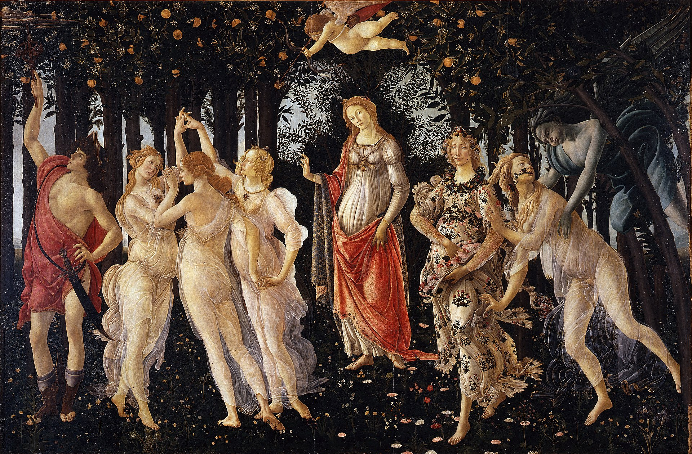
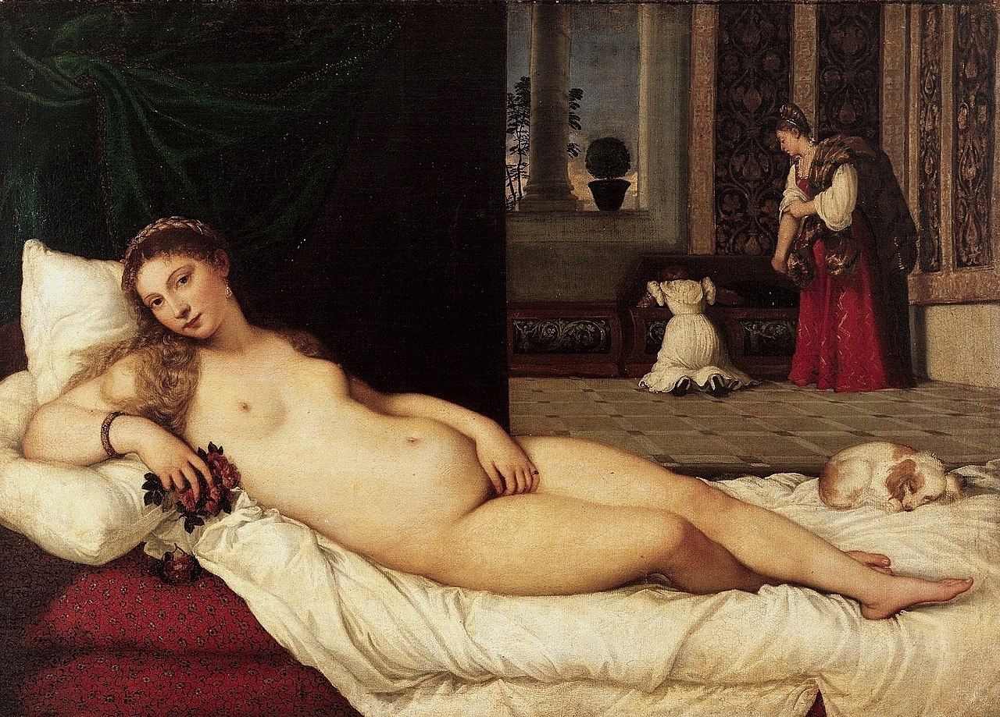
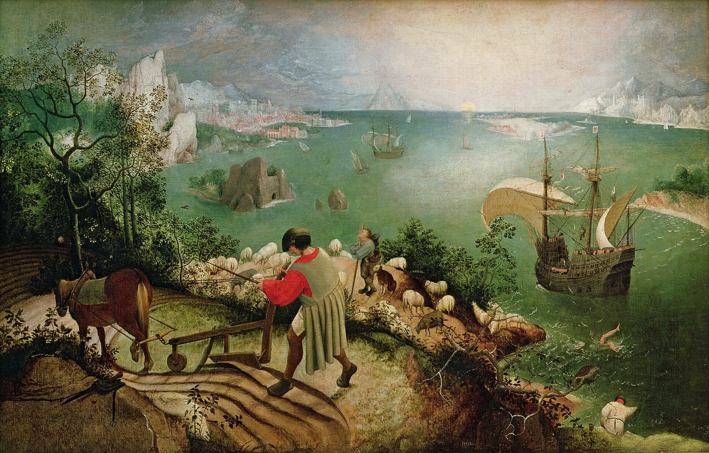
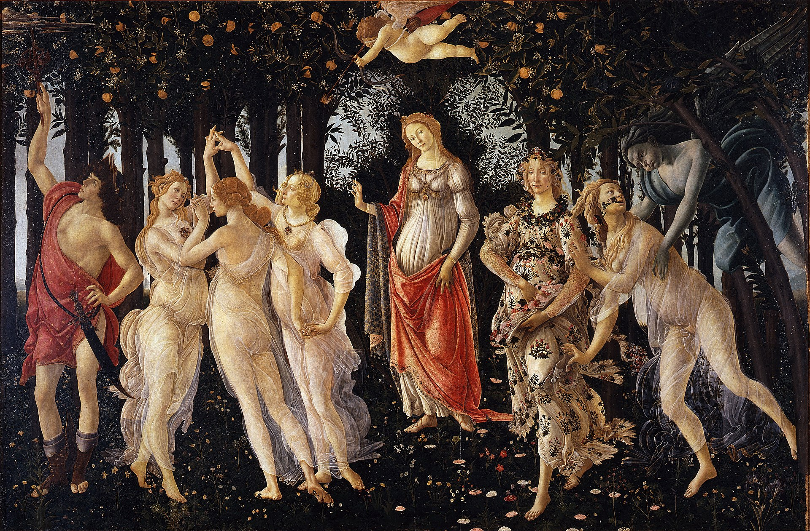
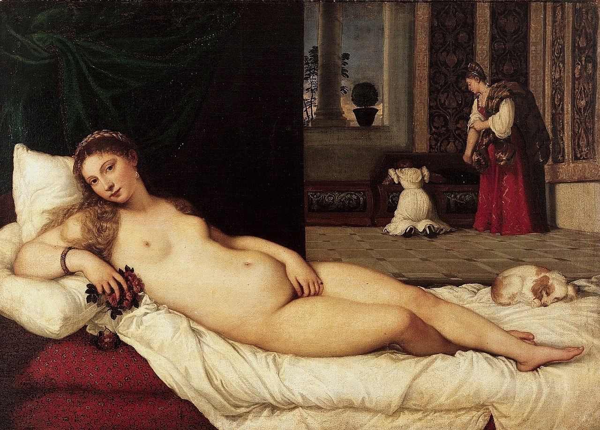
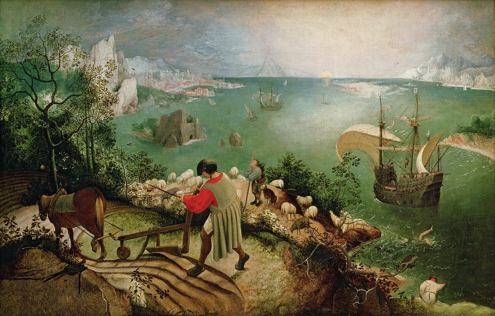
 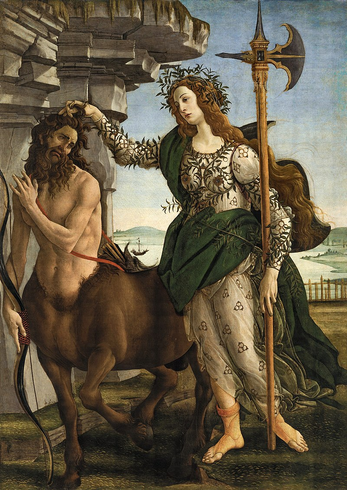
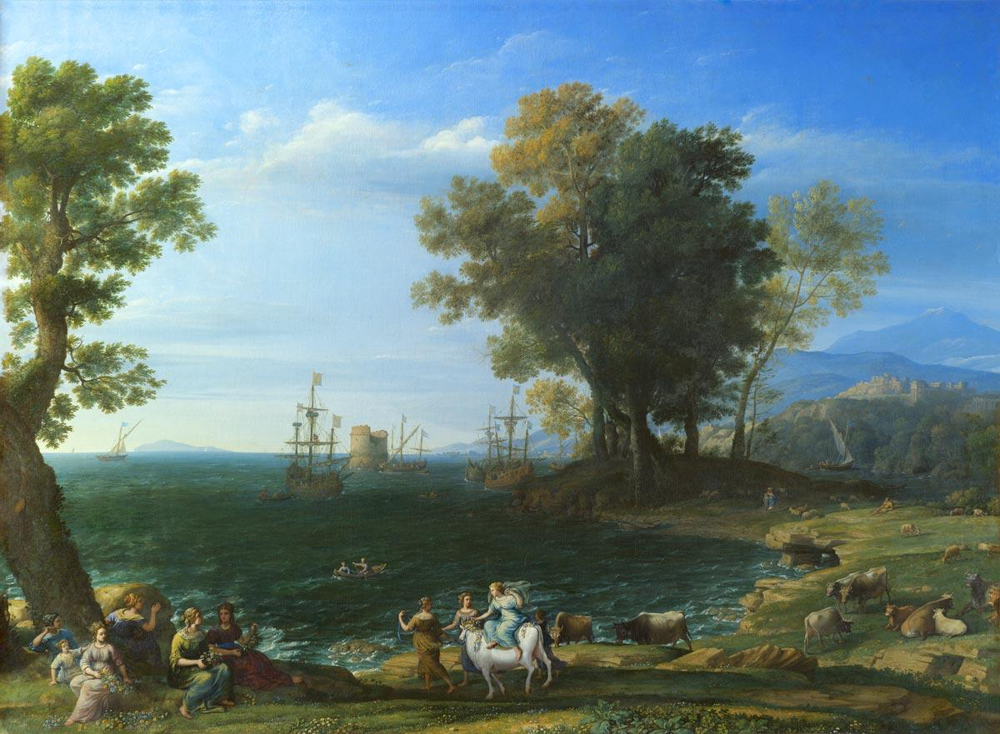
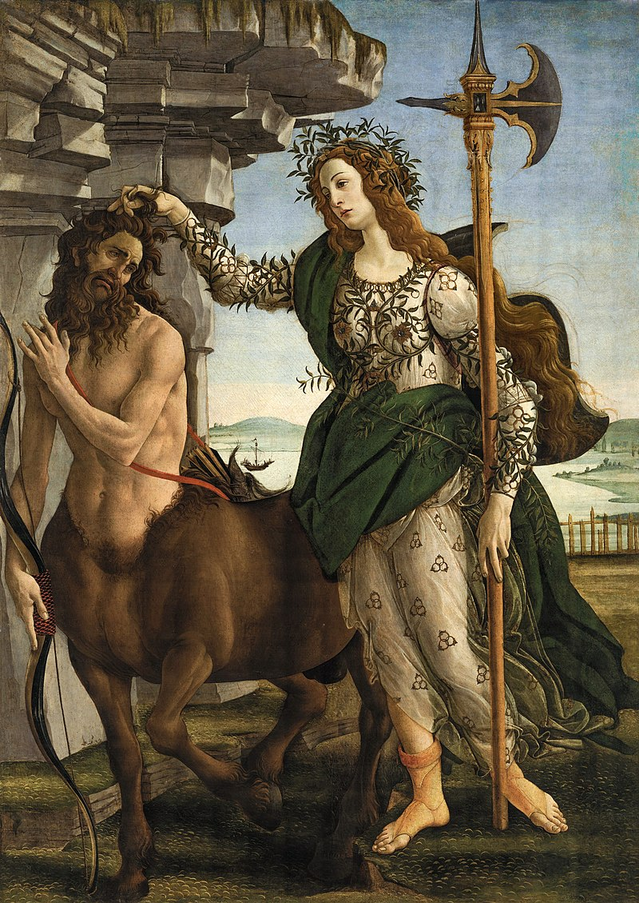
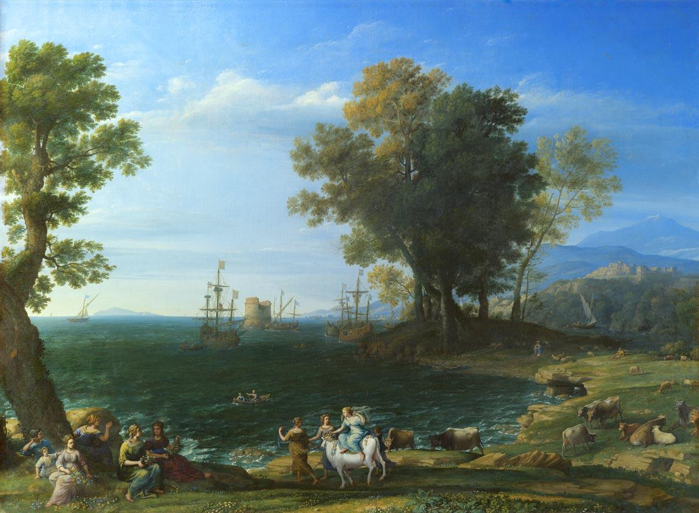
 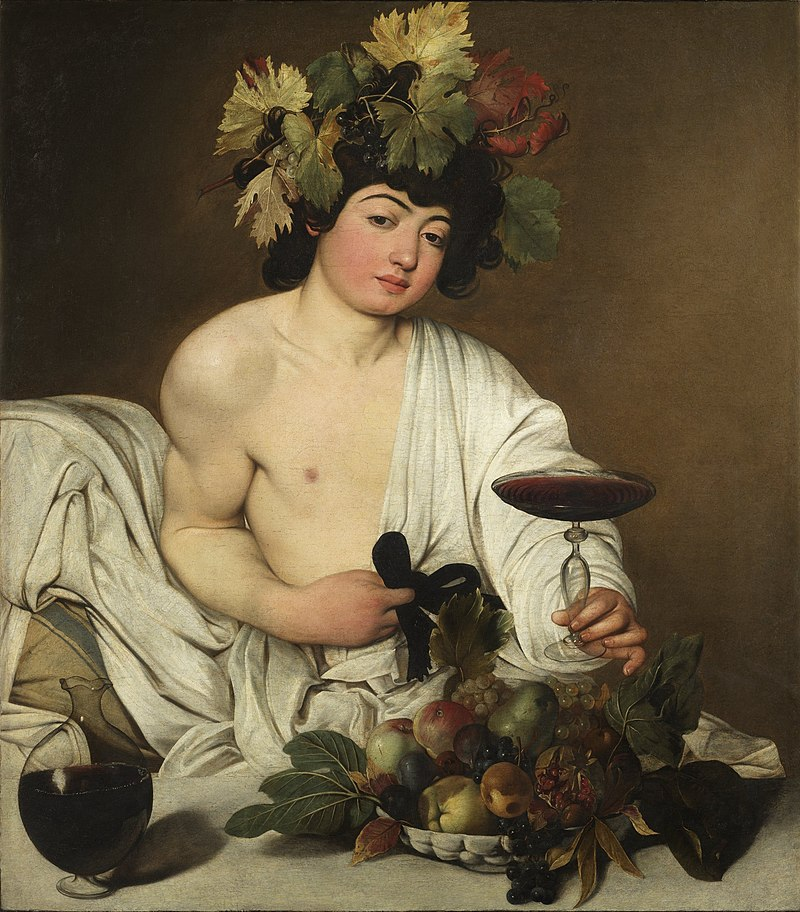
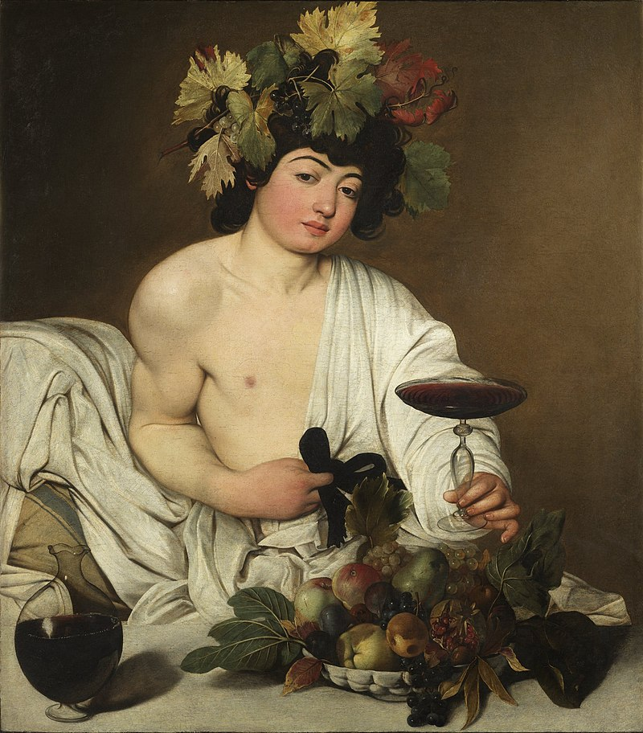
Данный сайт содержит основные представления о древнегреческой мифологии. Здесь можно ознакомиться с ключевыми мифами, картинами с античными сюжетами, сводной таблицей греко-римских богов и их генеалогическим древом, а также оставить отзывы и пожелания по улучшению сайта.
Древнегре́ческая мифология — мифология древних греков, тесно переплетающаяся с их религией. Оказала огромное влияние на развитие культуры и искусства всего мира и положила начало бесчисленному множеству религиозных представлений о человеке, героях и богах.
Древнейшее состояние греческой мифологии известно из табличек эгейской культуры, записанных линейным письмом Б. Для этого периода характерна немногочисленность богов, многие из них именуются иносказательно, у ряда имён имеются женские аналоги (например, di-wi-o-jo — Diwijos, Зевс и женский аналог di-wi-o-ja). Уже в крито-микенский период известны Зевс, Афина, Дионис и ряд других, хотя их иерархия могла отличаться от позднейшей.
Мифология «тёмных веков» (между упадком крито-микенской цивилизации и возникновением античной греческой цивилизации) известна только по позднейшим источникам.
Различные сюжеты древнегреческих мифов постоянно фигурируют в произведениях древнегреческих писателей; накануне эпохи эллинизма возникает традиция создавать на их основе собственные аллегорические мифы. В греческой драматургии обыгрываются и развиваются многие мифологические сюжеты. Крупнейшими источниками являются «Илиада» и «Одиссея» Гомера, «Теогония» и «Труды и дни» Гесиода, «Библиотека» Псевдо-Аполлодора, «Мифы» Гигина, «Метаморфозы» Овидия и «Деяния Диониса» Нонна
Как отмечал в своей работе «К критике политической экономии» Карл Маркс, «греческая мифология составляла не только арсенал греческого искусства, но и его почву»
Некоторые древнегреческие авторы пытались объяснить мифы с рационалистических позиций. Эвгемер писал о богах как о людях, чьи поступки были обожествлены. Палефат в сочинении «О невероятном», анализируя события, описанные в мифах, предполагал их результатами недопонимания или досочинения деталей.
Мифология древних греков рассматривается как архетипическая основа их культуры.